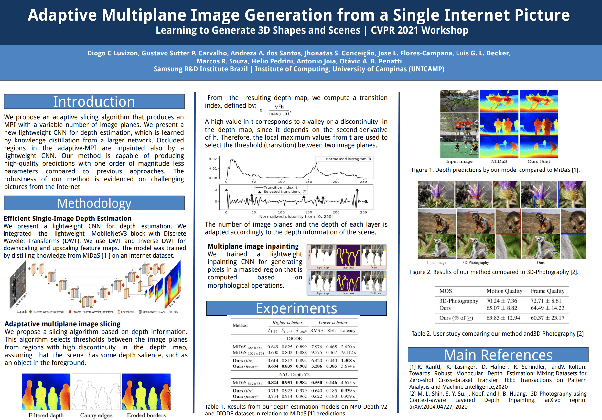
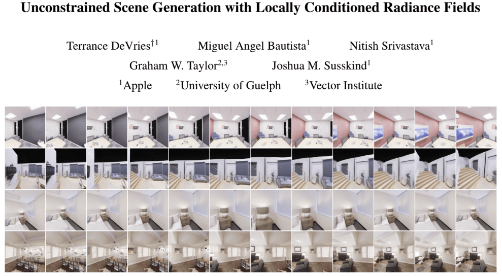

Learning to Generate 3D Shapes and Scenes
CVPR 2021 Workshop
Join YouTube live stream at https://youtu.be/fEPYHLXOZKQ.
Submit questions for the closing panel discussion using this google form: https://forms.gle/G5JCiKA2MmLogMiA9.
We would like to get your thoughts and opinions on academic datasets for learning to generate 3D shapes and 3D scenes. Please fill out this short survey: https://forms.gle/F9EtS4RCraoLtmwA6.
Introduction
This workshop aims to bring together researchers working on generative models of 3D shapes and scenes with researchers and practitioners who use these generative models in a variety of research areas. For our purposes, we define "generative model" to include methods that synthesize geometry unconditionally as well as from sensory inputs (e.g. images), language, or other high-level specifications. Vision tasks that can benefit from such models include scene classification and segmentation, 3D reconstruction, human activity recognition, robotic visual navigation, question answering, and more.
Schedule
All times in CDT Central Daylight Time (UTC-05:00)
| 9:00am - 9:15am | Welcome and Introduction | |
| 9:15am - 9:40am |
Invited Talk 1 (Rana Hanocka)
Title: Neural 3D Reconstruction |
|
| 9:40am - 10:05am |
Invited Talk 2 (S.M. Ali Eslami)
Title: Priors, Representation and Rendering for 3D Vision |
|
| 10:05am - 10:30am | Invited Talk 3 (Kai (Kevin) Xu)
Title: Deep Hierarchical Models for 3D Shape Understanding and Generation |
|
| 10:30am - 11:25am | Paper Spotlight Talks | |
| 11:25am - 11:50am |
Invited Talk 4 (Katerina Fragkiadaki)
Title: Learning to see by predicting views with 3D neural feature bottleneck networks |
|
| 11:50am - 12:15pm | Invited Talk 5 (Roozbeh Mottaghi)
Title: Learning Representations via Interaction with the 3D World |
|
| 12:15pm - 1:00pm | Panel Discussion (speakers & panelists) |
Invited Speakers & Panelists

Katerina Fragkiadaki is an Assistant Professor in the Machine Learning Department at Carnegie Mellon. Prior to joining MLD's faculty she worked as a post doctoral researcher first at UC Berkeley working with Jitendra Malik and then at Google Research in Mountain View working with the video group. Katerina is interested in building machines that understand the stories that videos portray, and, inversely, in using videos to teach machines about the world. The pen-ultimate goal is to build a machine that understands movie plots, and the ultimate goal is to build a machine that would want to watch Bergman over this.

Rana Hanocka is an Assistant Professor of Computer Science at the University of Chicago. She received her Ph.D. under the supervision of Daniel Cohen-Or and Raja Giryes at Tel Aviv University. She is interested in the combination of computer graphics and machine learning. Specifically, she is interested in using deep learning and exploring neural representations for manipulating, analyzing, and understanding 3D shapes.

Roozbeh Mottaghi is the Research Manager of the PRIOR team at Allen Institute for AI and an Affiliate Associate Professor in Paul G. Allen School of Computer Science & Engineering at the University of Washington. Prior to joining AI2, he was a post-doctoral researcher at the Computer Science Department at Stanford University. He obtained his PhD in Computer Science in 2013from University of California, Los Angeles. His research is mainly focused on Computer Vision and Machine Learning.

S. M. Ali Eslami is a Staff Research Scientist at Google DeepMind working on problems related to artificial intelligence. His group's research is focused on figuring out how we can get computers to learn with less supervision. Previously he was a post-doctoral researcher at Microsoft Research Cambridge. He did his PhD at the University of Edinburgh, where he was a Carnegie scholar working with Christopher Williams. During his PhD, he was also a visiting researcher at Oxford University working with Andrew Zisserman.

Kai (Kevin) Xu is an Associate Professor at the School of Computer Science, National University of Defense Technology, where he received his PhD in 2011. He conducted visiting research at Simon Fraser University (2008-2010) and Princeton University (2017-2018). His research interests include geometry processing and geometric modeling, especially on data-driven approaches to the problems in those directions, as well as 3D geometry-based vision and its robotic applications. He has co-organized several courses and tutorials on those topics at prestigious venues such as SIGGRAPH and Eurographics.
Qixing Huang is an Assistant Professor of Computer Science at the University of Texas at Austin. He obtained his PhD in Computer Science from Stanford University in 2012. From 2012 to 2014 he was a postdoctoral research scholar at Stanford University. From 2014 to 2016 he was a Research Assistant Professor at Toyota Technological Institute at Chicago. He received his MS and BS in Computer Science from Tsinghua University. He has also interned at Google Street View, Google Research and Adobe Research. His research spans computer vision, computer graphics, computational biology and machine learning.
Hao (Richard) Zhang is a Distinguished University Professor at Simon Fraser University. He obtained his PhD from the University of Toronto, and M.Math and B.Math degrees from Waterloo. His research is in computer graphics with special interests in geometric modeling, shape analysis, 3D vision, geometric deep learning, as well as computational design and fabrication. He has published more than 150 papers on these topics and methods from three of his papers on geometry processing have been adopted by CGAL, the open-source Computational Geometry Algorithms Library. Awards won by Richard include an NSERC Discovery accelerator Supplement Award in 2014, a Google Faculty Research Award in 2019, as well as faculty grants/gifts from Adobe and Autodesk. He and his students have won the CVPR 2020 Best Student Paper Award and best paper awards at SGP 2008 and CAD/Graphics 2017.
Call for Papers
Call for papers: We invite papers of up to 8 pages for work on tasks related to data-driven 3D generative modeling or tasks leveraging generated 3D content. Paper topics may include but are not limited to:
- Generative models for 3D shape and 3D scene synthesis
- Generating 3D shapes and scenes from real world data (images, videos, or scans)
- Representations for 3D shapes and scenes
- Completion of 3D scenes or objects in 3D scenes
- Unsupervised feature learning for vision tasks via 3D generative models
- Training data synthesis/augmentation for vision tasks via 3D generative models
Submission: we encourage submissions of up to 8 pages excluding references and acknowledgements. The submission should be in the CVPR format. Reviewing will be single blind. Accepted papers will be made publicly available as non-archival reports, allowing future submissions to archival conferences or journals. We welcome already published papers that are within the scope of the workshop (without re-formatting), including papers from the main CVPR conference. Please submit your paper to the following address by the deadline: 3dscenegeneration@gmail.com Please mention in your email if your submission has already been accepted for publication (and the name of the conference).
Important Dates
| Paper Submission Deadline | May 24 2021 - AoE time (UTC -12) |
| Notification to Authors | May 31 2021 |
| Camera-Ready Deadline | June 7 2021 |
| Workshop Date | June 25 2021 |
Accepted Papers

From Real to Synthetic and Back: Synthesizing Training Data for Multi-Person Scene Understanding
Igor Kviatkovsky, Nadav Bhonker, Gerard Medioni
Paper | Poster | Video (available after workshop)

Deep Mesh Prior: Unsupervised Mesh Restoration using Graph Convolutional Networks
Shota Hattori, Tatsuya Yatagawa, Yutaka Ohtake, Hiromasa Suzuki
Paper | Poster | Video (available after workshop)

Adaptive Multiplane Image Generation from a Single Internet Picture
Diogo C. Luvizon, Gustavo Sutter P. Carvalho, Andreza A. dos Santos, Jhonatas S. Conceicao,
Jose L. Flores-Campana, Luis G. L. Decker, Marcos R. Souza, Helio Pedrini, Antonio Joia, Otavio A. B. Penatti
Paper | Poster | Video (available after workshop)

Unconstrained Scene Generation with Locally Conditioned Radiance Fields
Terrance DeVries, Miguel Angel Bautista, Nitish Srivastava, Graham W. Taylor, Joshua M. Susskind
Paper | Poster | Video (available after workshop)

Rethinking Sampling in 3D Point Cloud Generative Adversarial Networks
He Wang, Zetian Jiang, Li Yi, Kaichun Mo, Hao Su, Leonidas Guibas
Paper | Poster | Video (available after workshop)
Organizers

Simon Fraser University

UT Austin
Simon Fraser University

Adobe Research, IIT Bombay

Brown University

Simon Fraser University
Prior workshops in this series
CVPR 2020: Learning 3D Generative ModelsCVPR 2019: 3D Scene Generation
Acknowledgments
Thanks to visualdialog.org for the webpage format.